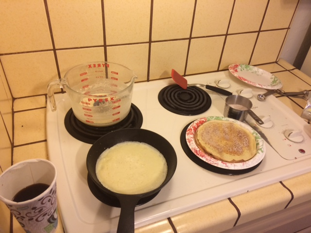

All About my Favorite Food
 Food is more than something to eat. It is deeply cultural, meaningful, steeped in context. Here is something I like to make on weekend mornings once in a while. It's a quiet time of introspections, colored by scenes half-remembered from my childhood.
The morning is quiet, and nobody else is up. I don't have